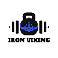
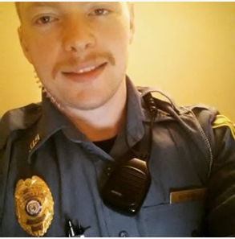

Menu
Home
Fitness
Store
About Me
Ambassadors
News Letter
L i v e - U n a f r a i d — D i e - S t r o n g
About Me

“Live Unafraid, Die Strong.” A simple phrase, synonymous with other phrases but this one rings true. I’ve been involved in plenty of harrowing situations where it was “me or the bad guy” as a police officer. Very quickly I realized peak physical wellness was vital, not only in life or death situations but in everyday life as well. Never have I been afraid of danger, in that I personally study “Odinism” or Norse Mythology. Vikings knew their destiny so they lived and died unafraid and strong. This lifestyle is what I wanted to instill in others. Steps by me were taken to promote combat preparedness and fitness in the county I patrolled by opening a free weight lifting class. This sparked my interest in powerlifting and assisting others to achieve greatness. With some study I rapidly grew in size and strength, learning what I could from fitness pros like Jay Cutler, Kai Greene, Jim Stoppani and the like. In time I gained a handful of endorsements to competitively lift. While I never placed in my competitions I learned so much from men and women above me. I took that experience and molded it into what you see today… The Iron Viking brand is here and I plan to outfit everyone in the best gym gear around!